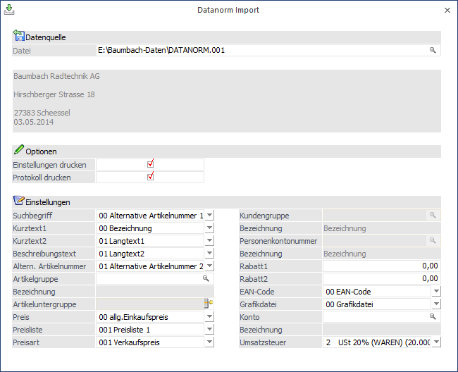
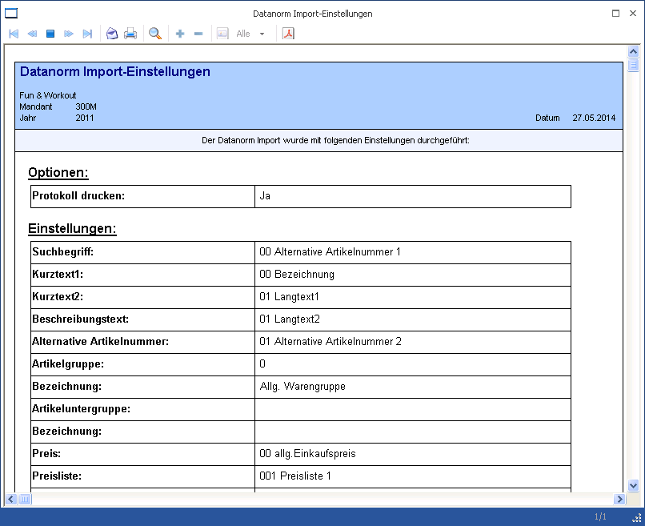
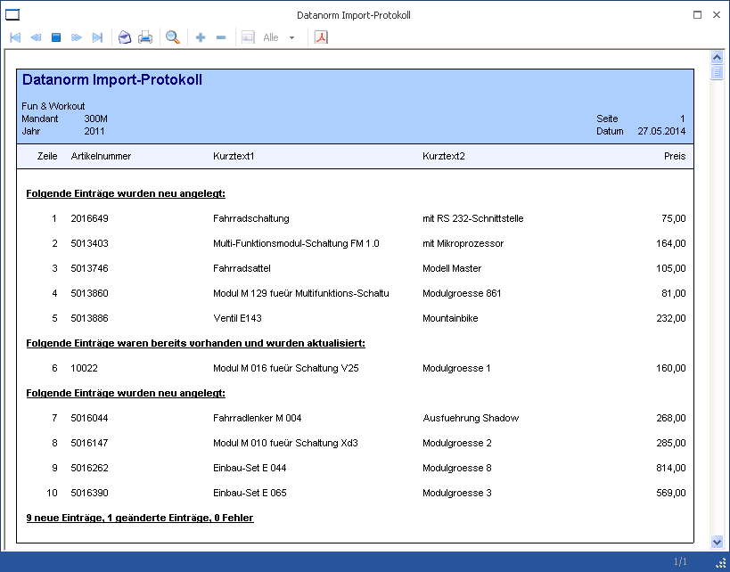
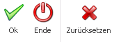
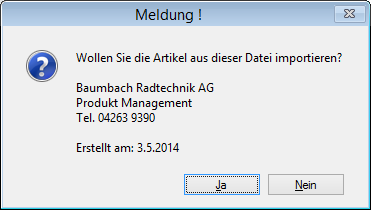

Mit Hilfe des Programms "Datanorm Import", welches unter…
1 WinLine START
1 Vorlagen
1 Datanorm Import
… zu finden ist, können Datanorm-Dateien für die Artikelanlage und -pflege (DATANORM.001 bis DATANORM.999) in WinLine eingespielt werden.
Hinweis
Folgende Datanorm-Dateien werden nicht unterstützt:
ü DATPREIS.001 bis DATPREIS.999 (Preisänderungen)
ü DATASETS.001 bis DATASETS.999 (Leistungssätze, Stücklisten)
ü DATANORM.RAB (Rabattgruppen)
ü DATANORM.WRG (Warengruppen)

Datenquelle
Ø Datei
Hier kann die Import Datei hinterlegt werden, wobei auch der Windows-Filedialog per Lupen-Symbol oder Taste F9 zur Verfügung steht. Im Anzeigebereich unterhalb des Eingabefeldes erscheint nach Auswahl der Datei der Name und die Anschrift des Lieferanten (falls die Informationen in der Datei vorhanden sind).
Optionen
Ø Einstellungen drucken
Aktiviert man die Checkbox "Einstellungen drucken", so wird nach dem Import eine Übersicht über die unter "Einstellungen" getroffenen Selektionen in den Spooler gedruckt.
Beispiel

Ø Protokoll drucken
Mittels dieser Checkbox kann ein Detailprotokoll in den Spooler gedruckt werden. Das Protokoll listet auf, welche Artikel importiert wurden.
Beispiel

Einstellungen
Unter "Einstellungen" kann definiert werden, in welches WinLine Feld die Informationen eines jeden Datensatz geschrieben werden sollen.
Beispiel
In der Datanorm-Datei gibt es ein Feld das heißt "Suchbegriff". Mittels Drop Down kann ausgewählt werden, ob der Inhalt des Feldes Suchbegriff in der WinLine als Alternative Artikelnummer 1, Alternative Artikelnummer 2 oder gar nicht importiert werden soll.
Des Weiteren ist es wie in den Vorlagen möglich, Vorbelegungen anzugeben wie zum Beispiel für die Preisart, Erlöskonto, Umsatzsteuer, etc..
Hinweis
Die hier getroffenen Einstellungen werden benutzerspezifisch gespeichert.
Buttons

Ø Ok
Mittels "OK"-Button bzw. der Taste F5 wird der Import gestartet. Zuvor erscheint noch folgende Meldung, welche mit "Ja" bestätigt werden muss.

Ø Ende
Durch Drücken des Buttons "Ende" bzw. der Taste ESC wird das Fenster geschlossen und kein Import durchgeführt.
Ø Zurücksetzen
Mit Hilfe des Buttons "Zurücksetzen" werden alle getroffenen Einstellungen / Auswahlen wieder verworfen.